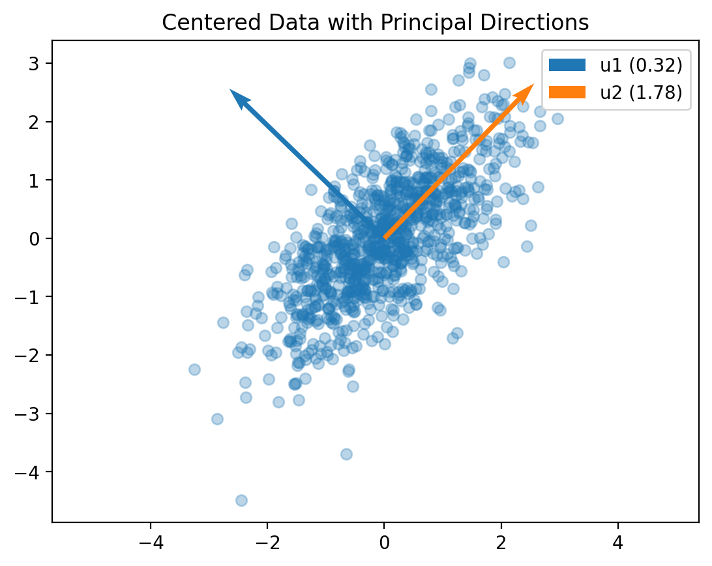
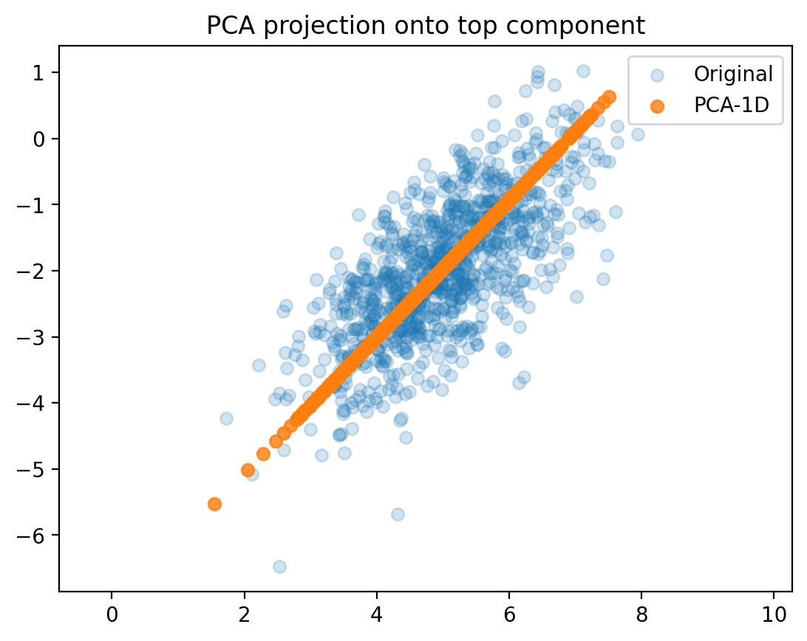
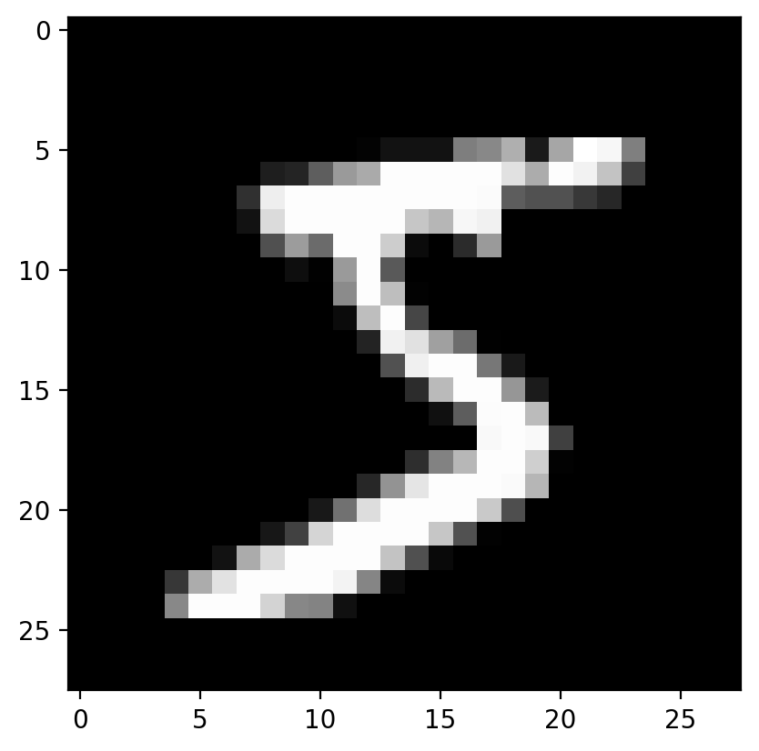
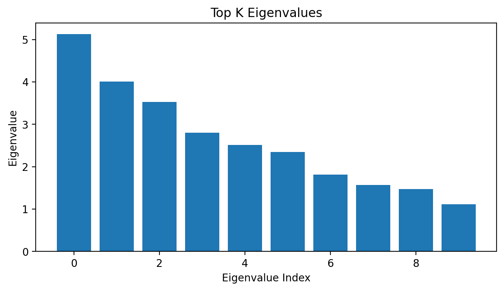

import matplotlib.pyplot as pltimport numpy as npprint(np.__version__)import torch import torch.nn as nnimport pandas as pd# Retina mode%matplotlib inline%config InlineBackend.figure_format ='retina'from sklearn.datasets import make_blobsfrom torchvision import datasets, transforms
1.26.4
Principal Component Analysis (PCA): Theory and Applications
Introduction
Principal Component Analysis (PCA) is one of the most fundamental techniques in data science and machine learning. It serves as a cornerstone for dimensionality reduction, data visualization, and understanding the structure of high-dimensional datasets. PCA transforms data to a lower-dimensional space while preserving as much variance (information) as possible.
At its core, PCA answers a crucial question: “What are the most important directions of variation in my data?” This question is essential when dealing with high-dimensional data where visualization is challenging, storage is expensive, or computational complexity is prohibitive.
PCA has applications across numerous fields: - Data Visualization: Reducing high-dimensional data to 2D/3D for plotting - Data Compression: Storing data more efficiently with minimal information loss - Noise Reduction: Filtering out noise by keeping only major components - Feature Engineering: Creating new features that capture data structure - Exploratory Data Analysis: Understanding patterns and relationships in data
Learning Objectives
By the end of this notebook, you will be able to:
Understand the mathematical foundations of PCA and eigenvalue decomposition
Derive the PCA algorithm from variance maximization principles
Implement PCA from scratch using eigendecomposition
Interpret principal components as directions of maximum variance
Analyze the trade-off between dimensionality reduction and information retention
Apply PCA to real-world datasets (synthetic and MNIST)
Evaluate PCA results using reconstruction error and explained variance
Connect PCA to linear algebra concepts (covariance, eigenvectors, projections)
Theoretical Background
The Variance Maximization Problem
PCA finds the directions in which data varies the most. Mathematically, given data matrix \(X \in \mathbb{R}^{n \times p}\) (n samples, p features), we want to find a unit vector \(v \in \mathbb{R}^p\) such that the variance of the projected data \(Xv\) is maximized.
For centered data (mean-subtracted), the variance of projected data is: \[\text{Var}(Xv) = \frac{1}{n-1} ||Xv||^2 = \frac{1}{n-1} v^T X^T X v = v^T \Sigma v\]
where \(\Sigma = \frac{1}{n-1} X^T X\) is the sample covariance matrix.
Lagrangian Solution:\[L = v^T \Sigma v - \lambda (v^T v - 1)\]
Taking derivatives and setting to zero: \[\frac{\partial L}{\partial v} = 2\Sigma v - 2\lambda v = 0\]
This gives us the eigenvalue equation: \[\Sigma v = \lambda v\]
Key Results
Principal Components: Eigenvectors of the covariance matrix
Explained Variance: Eigenvalues represent variance along each principal component
Optimal Projection: PCA provides the best linear dimensionality reduction in terms of preserved variance
Properties of PCA
Orthogonal Components: Principal components are mutually orthogonal
Decreasing Variance: Components are ordered by decreasing eigenvalues
Linear Transformation: PCA is a linear transformation of the original data
Reversible: Can reconstruct original data (with some loss if dimensions are reduced)
Implementation from First Principles
Example 1: Understanding PCA with 2D Correlated Data
Let’s start with a simple 2D example to build intuition about what PCA does.
Understanding the Data Generation Process
We’re generating data from a multivariate normal distribution with: - Mean: \(\mu = [5, -2]\) - Covariance: \(\Sigma = \begin{bmatrix} 1.0 & 0.7 \\ 0.7 & 1.0 \end{bmatrix}\)
The correlation coefficient is 0.7, meaning the variables are positively correlated. This creates an elliptical data cloud tilted along the correlation direction.
Step 1: Data Centering
Why center the data? PCA finds directions of maximum variance from the origin. If data isn’t centered, the first principal component might just point toward the data mean rather than capturing the true variance structure.
Interpretation: - Original data: Centered around [5, -2] with elliptical spread - Centered data: Now centered at origin [0, 0], preserving the variance structure - Red point: Original mean, Blue point: Centered mean (at origin)
Centering doesn’t change the relative positions of data points, just shifts the entire dataset.
Step 2: Computing the Covariance Matrix
The covariance matrix captures how variables co-vary. For centered data:
\[\Sigma = \frac{1}{n-1} X^T X\]
where each element \(\Sigma_{ij} = \text{Cov}(X_i, X_j)\).
Understanding the Covariance Matrix: - Diagonal elements: Variances of individual variables - Off-diagonal elements: Covariances between variables - Positive covariance (0.729): Variables tend to increase/decrease together - Nearly symmetric: \(\text{Cov}(X_1, X_2) = \text{Cov}(X_2, X_1)\)
Step 3: Eigenvalue Decomposition
The heart of PCA lies in decomposing the covariance matrix:
\[\Sigma v = \lambda v\]
Physical Interpretation: - Eigenvectors (v): Directions of principal axes - Eigenvalues (λ): Amount of variance along each principal axis
Now let’s apply PCA to a real-world high-dimensional dataset: handwritten digits from MNIST. This demonstrates PCA’s power in reducing dimensionality while preserving essential information.
Understanding MNIST in PCA Context:
Original Dimensionality: 784 dimensions (28×28 pixels)
Sample Size: 1000 images (subset for computational efficiency)
Challenge: How can we capture the essence of digit shapes in far fewer dimensions?
PCA Goal: Find the most important ‘pixel patterns’ that distinguish different digits
Data Preprocessing and Centering
Understanding the Covariance Structure
Interpreting the Covariance Matrix:
Size: 784×784 matrix showing how each pixel correlates with every other pixel
Patterns:
Bright regions show high correlation (pixels that tend to be bright/dark together)
Block-like structure suggests spatial correlations (nearby pixels are related)
The pattern reveals the underlying structure of how digit pixels co-vary
Comprehensive PCA Analysis with Visualizations
Let’s create a complete visualization showing all aspects of PCA:
### Plot the dataplt.figure(figsize=(4, 4))plt.scatter(X[:, 0], X[:, 1], alpha=0.5)
Principal Components as ‘Eigendigits’
The principal components can be interpreted as fundamental ‘building blocks’ or ‘eigendigits’ - basic patterns that combine to form all digit images.
Understanding Principal Components:
Each principal component represents a different pattern of pixel variations:
PC1: Captures the most common variation (average brightness vs. background)
Diminishing Returns: Adding more components improves quality, but with decreasing benefit
Storage Efficiency: Instead of storing 784 values per image, we can store just 10-50 principal component coefficients!
Summary and Key Takeaways
Mathematical Foundations:
Core Principle: PCA finds orthogonal directions of maximum variance through eigendecomposition of the covariance matrix
Optimization: Solves \(\max_v v^T \Sigma v\) subject to \(||v|| = 1\), yielding \(\Sigma v = \lambda v\)
Geometric Interpretation: Rotates coordinate system to align with natural axes of data variation
Practical Insights:
Dimensionality Reduction: Often 90%+ of variance captured by small fraction of dimensions
Data Compression: Store only principal component coefficients instead of raw features
Noise Reduction: Lower components often represent noise; keeping top components filters this out
Feature Engineering: PC scores can serve as new features for machine learning
Key Properties:
Linear Transformation: \(Y = XW\) where W contains eigenvectors
Orthogonal Components: Principal components are uncorrelated
Variance Ordering: Components ordered by decreasing explained variance
Reconstruction: \(\hat{X} = YW^T\) (perfect if all components kept)
Applications and Extensions:
Direct Applications: - Data visualization (reduce to 2D/3D) - Image compression and denoising - Exploratory data analysis - Preprocessing for machine learning
Connections to Other Methods: - Factor Analysis: PCA without noise assumptions - Independent Component Analysis (ICA): Non-orthogonal components - t-SNE/UMAP: Nonlinear dimensionality reduction - Autoencoders: Neural network-based dimensionality reduction
When to Use PCA:
Good Cases: - High-dimensional data with linear correlations - Need for interpretable dimensions - Data visualization requirements - Computational efficiency important
Limitations: - Assumes linear relationships - Components may not be interpretable - Sensitive to scaling of features - May not preserve local structure
Best Practices:
Always center data (subtract mean)
Consider scaling features if different units
Choose components based on explained variance and domain knowledge
Validate reconstruction quality for your specific use case
Compare with other dimensionality reduction methods
Understanding PCA provides a solid foundation for advanced topics in machine learning, computer vision, and data science. It bridges linear algebra theory with practical data analysis, making it an essential tool in the data scientist’s toolkit.
### Finding the eigenvalues and eigenvectorseigvals, eigvecs = torch.linalg.eigh(cov)print('Eigenvalues:')print(eigvals)print('Eigenvectors:')print(eigvecs)
# Plot centered data with eigenvectorsplt.scatter(X_centered[:, 0], X_centered[:, 1], alpha=0.3)# Plot eigenvectors starting from the meanfor i inrange(2): vec = eigvecs[:, i] plt.quiver(0, 0, vec[0], vec[1], scale=3, color=f"C{i}", label=f"u{i+1} ({eigvals[i]:.2f})")plt.axis('equal')plt.legend()plt.title("Centered Data with Principal Directions")plt.show()

top_vec = eigvecs[:, -1] # Last column of eigvecs (the top eigenvector)print('Top eigenvector:')print(top_vec)
Top eigenvector:
tensor([0.6948, 0.7192])
# Project centered data onto the top eigenvector using dot productX_proj = torch.zeros_like(X_centered) # Initialize an empty tensor to store projections# Loop through each data point and project it onto the top eigenvectorfor i inrange(X_centered.shape[0]):# Calculate the projection of the i-th data point onto the top eigenvector X_proj[i] = torch.dot(X_centered[i], top_vec) * top_vec # Scalar projection * eigenvector# Reconstruct the data by adding the mean backX_recon = X_proj + X_mean
Text(0.5, 1.0, 'PCA projection onto top component')

# Load MNIST datasetimport torchvisiontransform = transforms.Compose([transforms.ToTensor(), transforms.Lambda(lambda x: x.view(-1))])train_data = torchvision.datasets.MNIST(root='~/.data', train=True, download=True, transform=transform)# Take a small subset of data for simplicityX = train_data.data[:1000].float() # Take the first 1000 images (28x28 pixels)y = train_data.targets[:1000] # Corresponding labels
# View the first imageplt.imshow(X[0].reshape(28, 28), cmap='gray')

X = X /255.0# Normalize to [0, 1]X_centered = X - X.mean(dim=0) # Center the data by subtracting the mean
X_vecs = X_centered.reshape(X_centered.shape[0], -1) # Reshape to (n_samples, n_features)
# Compute covariance matrixcov_matrix = torch.cov(X_vecs.T) # Transpose to get (n_features, n_samples)
# Top K eigenvalues and eigenvectorsK =10top_k_eigvals, top_k_indices = torch.topk(eigvals, K)top_k_eigvecs = eigvecs[:, top_k_indices]print('Top K eigenvalues:', top_k_eigvals)print('Top K eigenvectors shape:', top_k_eigvecs.shape)# Plot the top K eigenvaluesplt.figure(figsize=(8, 4))plt.bar(range(K), top_k_eigvals.numpy())plt.xlabel('Eigenvalue Index')plt.ylabel('Eigenvalue')plt.title('Top K Eigenvalues')plt.show()
Top K eigenvalues: tensor([5.1288, 4.0052, 3.5313, 2.8018, 2.5156, 2.3427, 1.8130, 1.5647, 1.4760,
1.1167])
Top K eigenvectors shape: torch.Size([784, 10])

# Project data onto the top K eigenvectorsX_proj = torch.matmul(X_vecs, top_k_eigvecs)print('Projected data shape:', X_proj.shape)# Reconstruct the data from the top K components